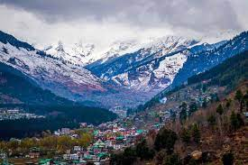

Manali is a town, near Kullu town in Kullu district in the Indian state of Himachal Pradesh. It is situated in the northern end of the Kullu Valley, formed by the Beas River. The town is located in the Kullu district, approximately 270 kilometres (170 mi) north of the state capital of Shimla and 544 kilometres (338 mi) northeast of the national capital of New Delhi. With a population of 8,096 people recorded in the 2011 Indian census Manali is the beginning of an ancient trade route through Lahaul (H.P) and Ladakh, over the Karakoram Pass and onto Yarkand and Hotan in the Tarim Basin of China. Manali is a popular tourist destination in India and serves as the gateway to the Lahaul and Spiti district as well as the city of Leh in Ladakh.
